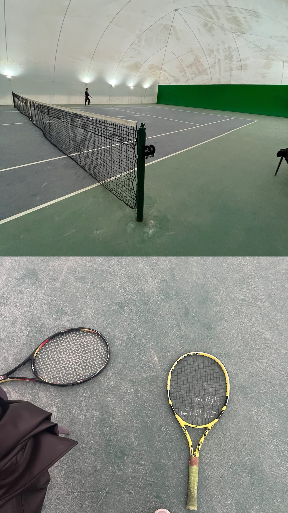

GEOMATICS ENGINEERING
Rabia Demir.
Mapping places. Finding meaning.
Geomatics Engineering student at Hacettepe University. Exploring remote sensing, GIS and the stories behind places.
REMOTE SENSING / WEB GIS / PHOTOGRAMMETRYANKARA · 39.9334° N 32.8597° E
Selected work
View all projects →Illustrative project covers · Analysis results are available inside each project.
A LITTLE MORE PERSONAL